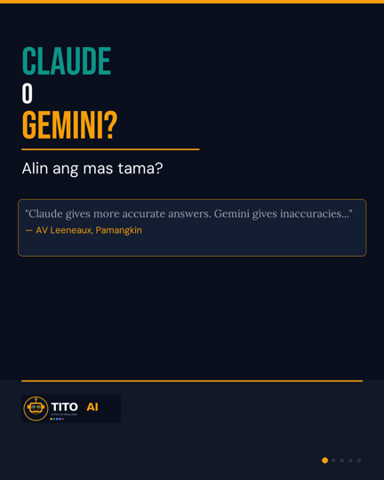
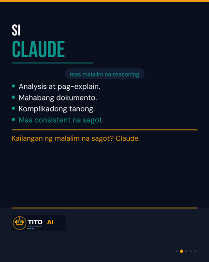
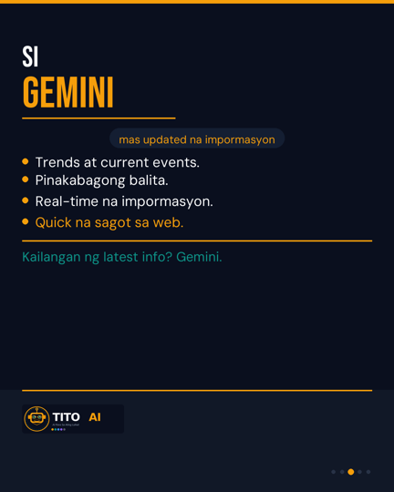
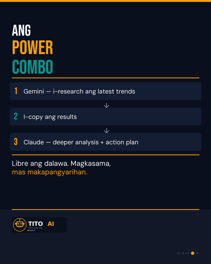

June 16, 2026 · For approval by Joseph · @TitoAIPH
Dropping Monday · 8:00 PM PHT · 5:00 AM PST
Inspired by a Pamangkin
"I find Claude more accurate on most things. Every now and then, I execute the same prompt for both and 80% of the time, Gemini gives out some inaccuracies. Is it because the prompt has to be more nuanced compared to Claude?"
— AV Leeneaux · @avdejesus · Instagram
Companion Slides · 5 Slides · Swipe to preview
SLIDE 1 — HOOK

SLIDE 2 — CLAUDE

SLIDE 3 — GEMINI

SLIDE 4 — POWER COMBO

SLIDE 5 — CTA
Script — 60 sec · Talking Head · AI Tip
Hook · 0:00–0:04
Direct eye contact. No smile yet. Let the question land.
"Claude o Gemini — alin ang mas tama?"
Credit + Setup · 0:04–0:15
Warm, genuine. Credit AV. Show the question on screen or text overlay: "Tanong ni AV"
"Isang Pamangkin natin — si AV — ang nagtanong nito sa akin.
Ginagamit niya ang dalawa, pero napansin niya: mas accurate si Claude. Bakit?"
Answer · 0:15–0:38
Calm, clear. Use fingers to count. Emphasize "gamitin mo ang dalawa."
"Ganito ko sinesagot 'yan:
Si Claude — mas malalim ang reasoning. Mas magaling sa pag-analyze, pagsulat, at pag-explain ng komplikadong bagay.
Si Gemini — mas updated. Mas magaling sa trends, news, current events.
Kaya ang sagot? Gamitin mo ang dalawa. I-research sa Gemini — kunin ang latest info. Tapos i-paste sa Claude para sa mas malalim na analysis."
Example · 0:38–0:52
Fast, concrete. Optional 2-sec screen flash of Gemini → Claude.
"Halimbawa: Naghahanap ka ng trending na produkto ngayong buwan.
Gemini muna — para sa trend data. Tapos Claude — para gumawa ng marketing plan mula doon.
Libre ang dalawa. Magkasama, mas makapangyarihan."
CTA + Closer · 0:52–1:00
Warm smile. Direct to camera.
"May tanong ka rin ba tungkol sa AI? I-comment mo — baka maging next post mo 'yan.
Ingat lagi, mga Pamangkin. Tito AI — AI Para Sa Ating Lahat. 🇵🇭"
Monday · June 16 · W25
Claude o Gemini — Kailan Mo Gagamitin ang Isa't Isa?
AI Tip · 60 sec · Inspired by AV Leeneaux (@avdejesus)
TikTok
Claude o Gemini — alin ang mas tama? 🤔
Sagot: gamitin mo ang dalawa.
Gemini = pinakabagong impormasyon + trends
Claude = mas malalim na analysis + reasoning
I-research sa Gemini → i-paste sa Claude. Libreng power combo. 💪
May tanong ka rin? I-comment — baka maging next post mo 'yan. 👇
Ingat lagi, mga Pamangkin. @tito.aiph — AI Para Sa Ating Lahat. 🇵🇭
First Comment — pin immediately after postingSubukan mo: claude.ai + gemini.google.com — libre ang dalawa. I-try mo ngayon. 😊
Instagram
Kumusta, mga Pamangkin! 🤖
Isang magandang tanong mula sa isa sa ating mga Pamangkin — si AV:
"Claude gives more accurate answers. Gemini gives some inaccuracies. Bakit ganun?"
Ang sagot:
Si Claude ay mas malalim ang reasoning. Mas magaling sa analysis, pagsulat, at pag-explain ng komplikadong bagay.
Si Gemini ay mas updated. Mas magaling sa trends, news, at current events.
Ang pinaka-epektibong paraan? Gamitin mo ang dalawa nang magkasama.
📌 Gemini muna para sa current info
📌 Paste sa Claude para sa mas malalim na analysis
Halimbawa: Naghahanap ka ng trending na produkto? Gemini ang mag-reresearch ng trends. Claude ang gagawa ng marketing strategy.
Libre ang dalawa. Magkasama, mas makapangyarihan.
May tanong ka rin tungkol sa AI? I-comment mo — baka maging next post natin 'yan. 👇
Ingat lagi, mga Pamangkin. @tito.aiph — AI Para Sa Ating Lahat. 🇵🇭
First Comment — pin immediately after postingSubukan mo: claude.ai + gemini.google.com — libre ang dalawa. I-try mo ngayon. 😊
Facebook
Kumusta, mga Pamangkin! 🤖
Isang napaka-galing na tanong ang natanggap ko mula sa isa sa ating komunidad — si AV Leeneaux:
"Tito, I find Claude more accurate than Gemini. Bakit ganon? Is it because the prompt needs to be more nuanced for Gemini?"
Ganito ko sinagot:
Si Claude — mas malalim ang reasoning at analysis. Kung kailangan mo ng comprehensive na sagot, maingat na paliwanag, o mahabang dokumento — Claude ang mas mahusay.
Si Gemini — mas updated sa current events at trends. Kung kailangan mo ng pinakabagong balita, trending topics, o real-time na impormasyon — Gemini ang mas mabilis.
Kaya ang tunay na sagot ay hindi "alin ang mas magaling" — kundi gamitin mo ang dalawa nang magkasama.
Ganito ang workflow:
1. I-research sa Gemini para sa latest info
2. I-copy ang results
3. I-paste sa Claude para sa mas malalim na analysis at action plan
Libre ang dalawa. Ngayon na pwede.
May tanong ka rin tungkol sa AI? I-comment mo dito — baka maging susunod nating post 'yan. 😊
Ingat lagi, mga Pamangkin. @tito.aiph — AI Para Sa Ating Lahat. 🇵🇭